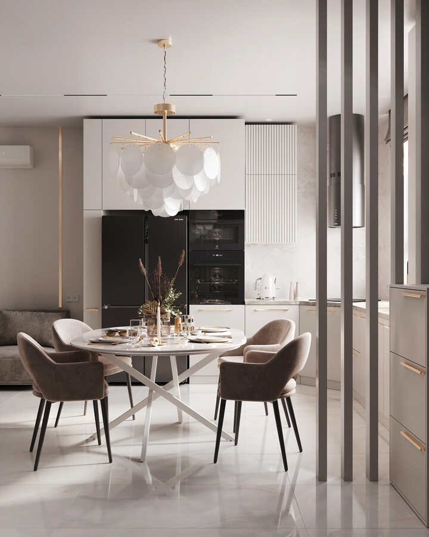
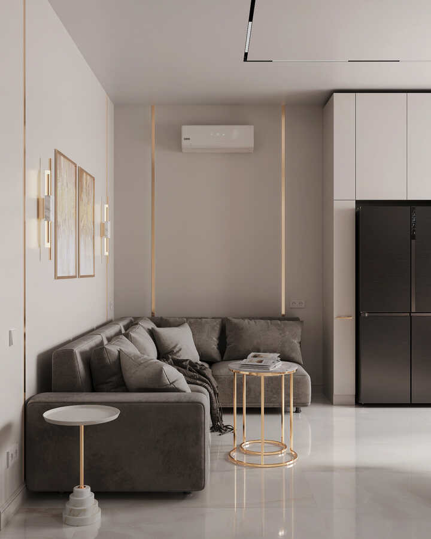
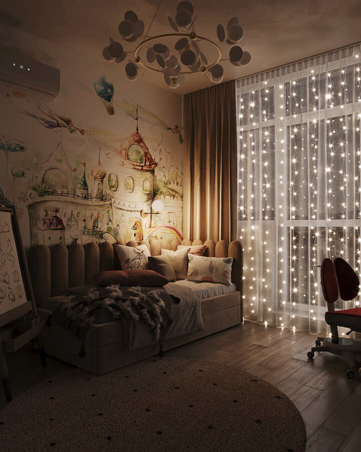
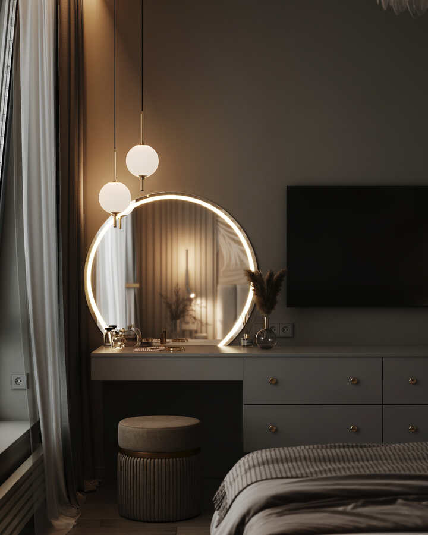
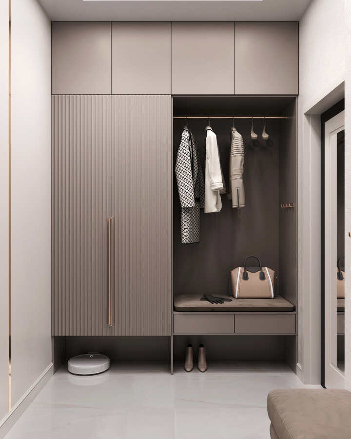
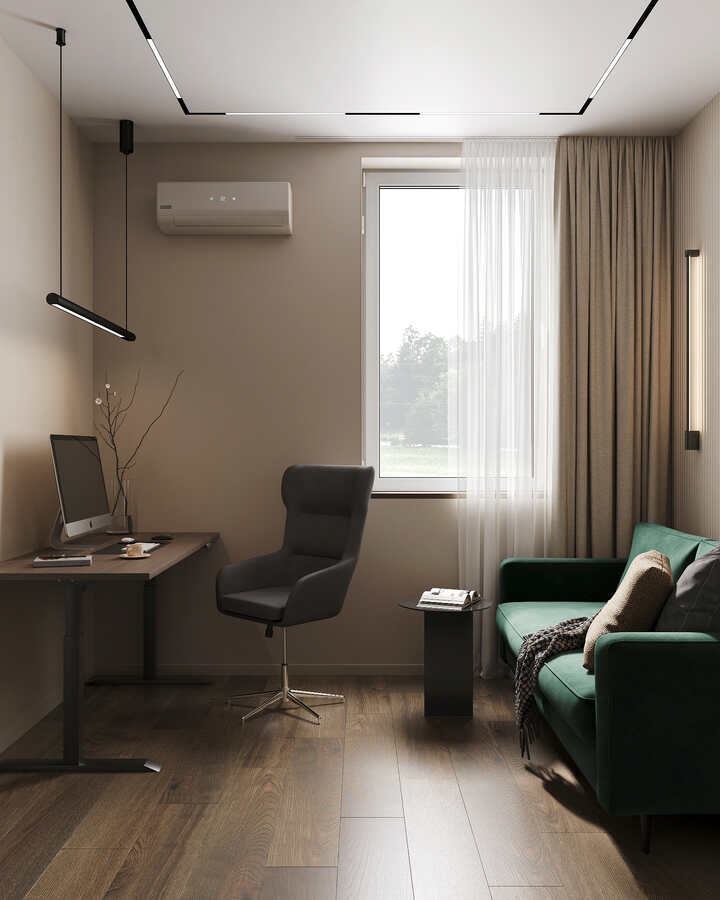

RESIDENCE 01 / 86 M²
Тактильный покой
Петроградская сторона
Ремонт и отделка под ключ, где архитектура, свет и материалы собраны в одну точную систему.
От первого замера до последнего светильника — один маршрут, одна команда и внимание к деталям, которые делают пространство вашим.
Три проекта, где материал, свет и пропорция работают на ощущение дома.

Петроградская сторона

Васильевский остров

Крестовский остров
Проектируем красоту, которую можно реализовать: с точной сметой, сроками и авторским контролем.

Образ жизни → планировка

Фактура → инженерия

Контроль → результат
Оставьте контакты — мы свяжемся с вами, обсудим объект и назначим удобное время для консультации.